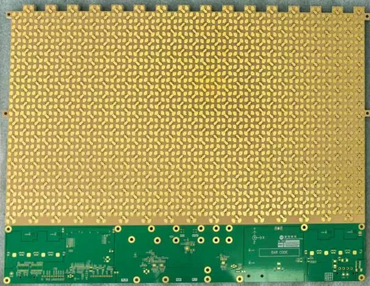
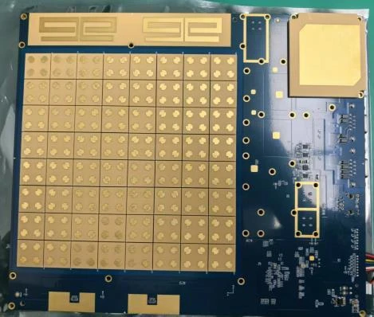
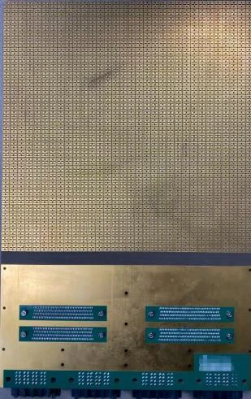
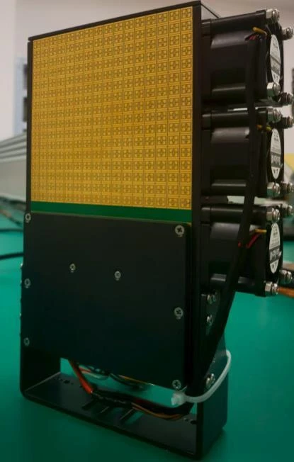
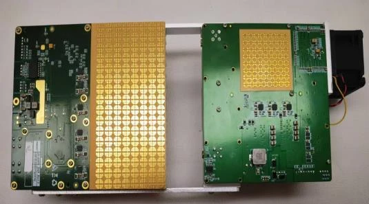
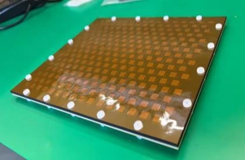

Ka · 双极化
1024 单元发射／接收系列
包括 1024 单元相控阵发射天线和 1024 单元相控阵接收天线。
南京紫微泰克技术有限公司
Purple Microwave Technology
专注各频段相控阵天线，
深耕毫米波通信产品与服务。
公司由江苏省产业技术研究院／长三角国家技术创新中心、紫金山实验室、紫金山科技产业发展集团和项目团队，以“拨投结合”模式投资成立，落地南京江宁经济技术开发区。
核心团队来自紫金山实验室和东南大学毫米波全国重点实验室，在有源天线、电路与测试测量领域积累技术经验，推动科研成果走向工程产品。
多频段相控阵与有源天线
单板化设计与多模块集成
自动校准与测试测量


| 参数 | 500 m–1 km 配置 | 1–2 km 配置 | 2–5 km 配置 | 10–30 km 配置 |
|---|---|---|---|---|
| 覆盖距离 | 500 m–1 km | 1–2 km | 2–5 km | 10–30 km |
| 速率 | 最高 3.7 Gbps | 3.5 Gbps | 1.6 Gbps | 300 Mbps |
| 尺寸 | 100 × 200 mm | 200 × 300 mm | 200 × 300 mm | 300 × 500 mm |
| 功耗 | ＜30 W | ＜50 W | ＜80 W | ＜150 W |
以上为手册列示的不同配置，距离与速率不可跨配置组合。实际链路表现与环境、部署及配置有关，具体指标以双方确认的技术规格为准。
面向卫星通信与地面通信终端，
涵盖 Ka、Ku、K 频段及 24 GHz 等产品。
包括 1024 单元相控阵发射天线和 1024 单元相控阵接收天线。

采用收发共口径方案，为终端集成提供相控阵硬件。

面向不同阵列规模需求的收发一体化天线方案。

相控阵天线

相控阵天线

小型相控阵天线

低成本层叠薄膜天线
查看产品图片与完整配置说明
下载产品手册 · PDF从高密度专网到空天地连接，
围绕场景选择频段、链路与阵列方案。
面向工业现场数据传输、产线监控与港口专网等应用方向。
工业专网面向车地通信、交通专网和车路协同等无线连接需求。
移动连接面向大型活动、街道及偏远区域，减少对光纤挖埋的依赖。
无线部署面向卫星通信终端阵面，提供不同频段与阵列规模的硬件选择。
空天互联以上为产品面向的应用方向，不代表特定项目的交付案例。
核心团队依托紫金山实验室及东南大学毫米波全国重点实验室的技术积累，围绕有源天线、电路、测试测量展开研发。
围绕多频段阵列、收发共口径、单板化及多模块集成形成产品方案。
将自主知识产权的自动校准与测试用于相控阵产品研发。


C114 通信网专访介绍了公司的成立背景与技术路线，提及洪伟教授担任首席科学家，以及面向毫米波专网和卫星通信的布局。文中“未来 1–3 年”的发展规划为报道时点的展望。
科研成果服务社会。
以毫米波通信与卫星通信为方向，
持续推动相控阵技术的产业化与规模化应用。
欢迎就产品选型、技术需求与业务合作联系我们。